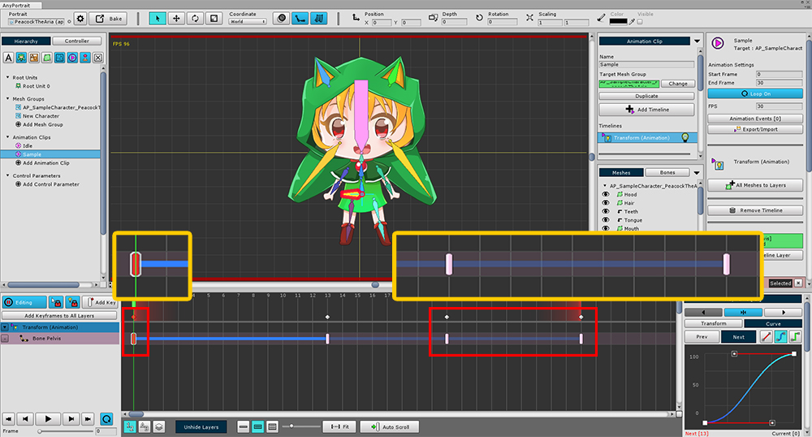
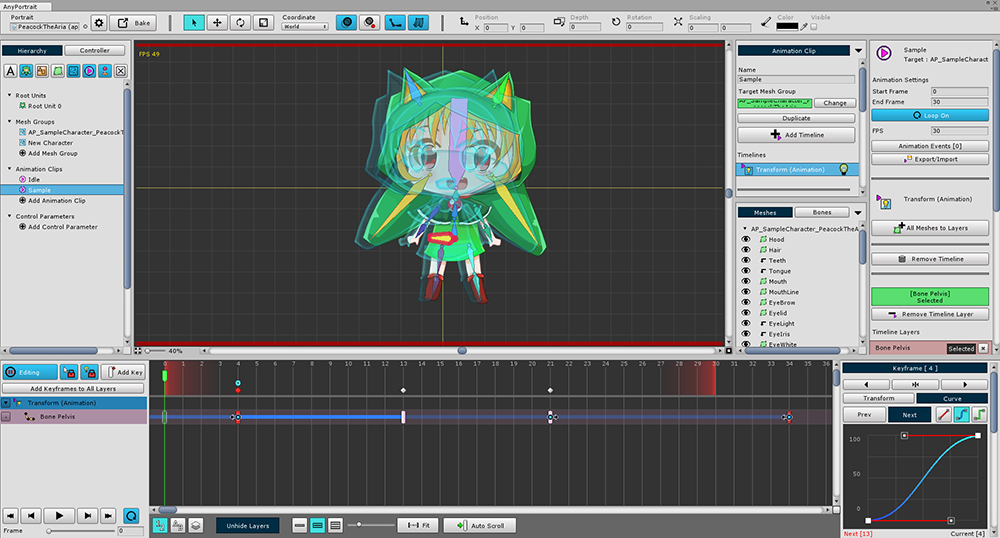
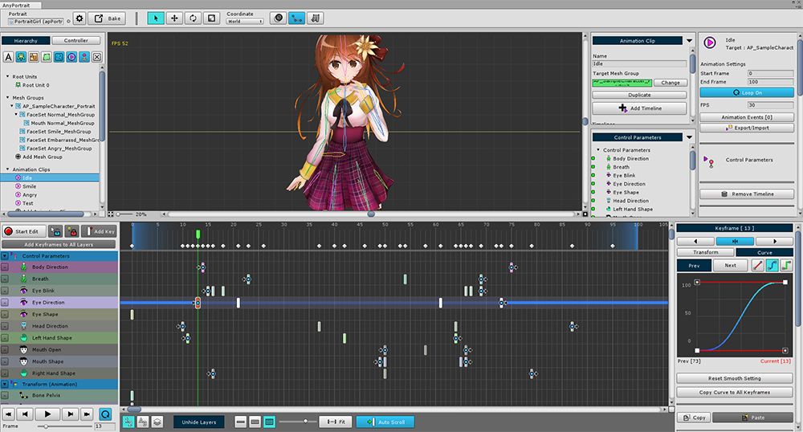

AnyPortrait > マニュアル > 自動ループキーフレーム
自動ループキーフレーム
1.0.0
ループアニメーションを作成する場合、ほとんどの場合、開始フレームと終了フレームは同じでなければなりません。
これは、開始点と終了点の境界があいまいで、自然なループアニメーションが発生するためです。
このため、他の多くのプログラムで作業する場合は、開始フレームをコピーして終了フレームに貼り付け、スムーズに処理する必要があります。
AnyPortraitには、これらのタスクを減らすための「Auto Loop Keyframe」という機能があります。

これは典型的なループアニメーションの構造です。
開始フレームと終了フレームに同じポーズのキーフレームがあります。
ここで不必要に複製された「最後のキーフレーム」を削除しようとします。

最後のキーフレームを削除すると、他のフィーチャのアイコンとして表示されるキーフレームが終了フレームに表示されます。
これらの半透明キーフレームは、「開始キーフレームのダミーキーフレーム」です。
ループアニメーションの場合、開始キーフレームは自動的に複製されます。
このダミーのキーフレームを「Auto Loop Keyframe (自動ループキーフレーム)」と呼びます。
これが起こると、キーフレームに矢印アイコンが表示され、キーフレームが接続されていることを示します。


開始キーフレームを移動すると、「Auto Loop Keyframe」が自動的に移動します。
この状態でもループアニメーションは可能です。
これは、開始キーフレームがループの反対側の実際のキーフレームに結び付けられているためです。
実際には、上記の画面に接続されたアニメーションカーブを見ることができます。

開始キーフレームよりも前のフレームに移動して再生すると、
それは一般的にアニメ化されるべきではありません。
しかし、アニメーションは実質的にループしているので再生されていることがわかります。

「Auto Loop Keyframes」を使用すると、開始フレームと終了フレームが空のループアニメーションを作成することができます。
これにより、ループ境界が不明瞭になり、より自然な動作が生成されます。